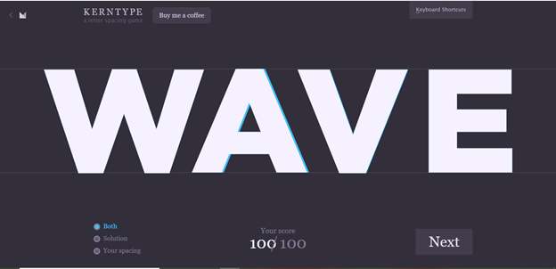
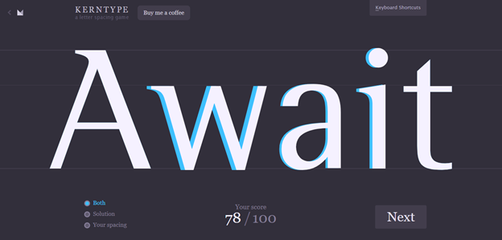
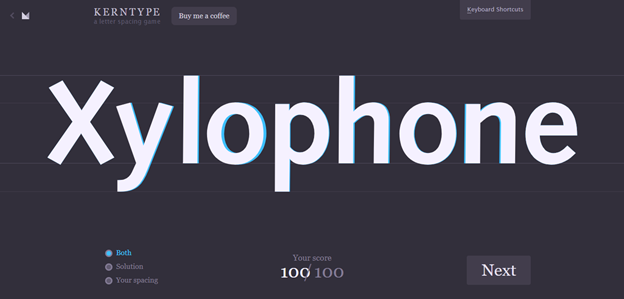
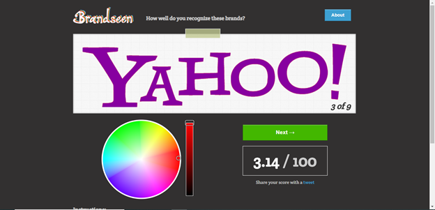
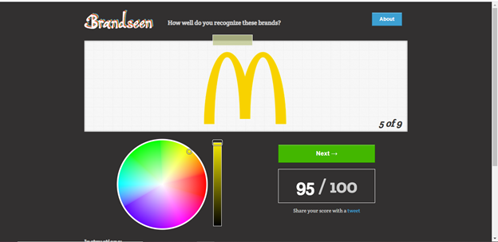
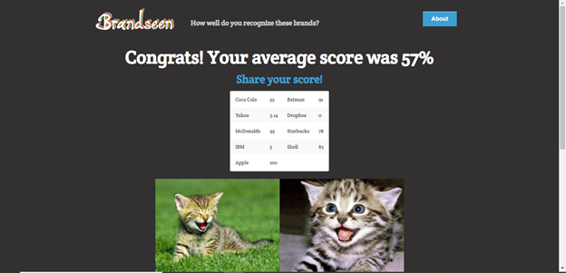
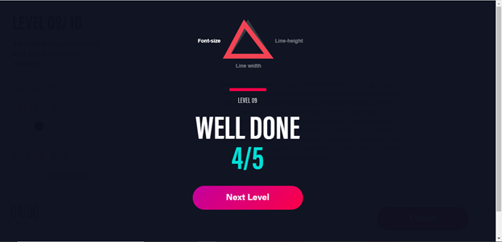

Activities
My Favorite Application
One of my favorite app is Grab. I have been using it since I came to the Philippines.
Usually, I use it for transportation. Since I am not familiar with the Philippines, it is hard for me
to take a jeepney or a taxi. Many people told me to not ride a taxi by myself because I am a
foreigner. But when I need to go far by myself, I use this app to book a car. The app shows the
payment and estimated arrival time before the booking. It also shows the current location of the
car, so I can check where the car is heading to while I am in the car. It makes me feel safe.
During the pandemic right now, I also use the app to order delivery food. Currently, I
cannot go out frequently because of the quarantine. During the ECQ, I only had can goods or
noodles because cooking is not allowed in the dorm, but after grab resumed the service, I am
able to buy any kinds of food. Since I have been just stayed in the dorm, delicious food makes
me happy. It really helps me to survive here in the dorm.
Additionally, I can pay through online if I use GrabPay. When I use the app, I cash-in to
GrabPay wallet by using online banking. Thanks to this service, I do not need to go out to
withdraw money frequently. I only use Grab car and Grab food but other than these two, the app
has delivery, Mart, Pabili, Gift Cards, and Offers.
Home Screen
Find a place you are going to
Pick a car you want to book
GrabPay Wallet
GrabFood
Personas
Persona 1
Persona 2
Persona 3
Portfolio Prototype
Invitation Design
1. How can we improve this?
You can point out details and give comments for improvements.
• The fonts and text alignment can be improved. Fonts looks plain and all texts are
aligned top left. There is an unnatural space at right and bottom of the text. It can
give different impression by changing the fonts to appropriate fonts for the dinner
party invitation.
• It would be better to add some visual design and color. It is too plain for the
dinner party invitation. This design gives the recipient not good impression about
the party. The party does not look fun at all.
• The important information such as date and place of the party is hard to find from
this. Those kinds of important information should be separated from the message
so that the recipient does not need to find from the message.
• Adding a title will improve the invitation. It would be better to have a title so that
the recipient can be able to understand what the message is about immediately.
2. What would be the objective function?
Tell me what the passage is all about. What is the objective?
I believe the objective function would be the information about after dinner party. The
passage is all about the information of the party to invite the recipient. The objective is a
confirmation of attendance of the party by delivering information about the party such as
what kind of party, the place, date and time to the recipient. Therefore, the passage
should be clearly written the important information about the party and the way to contact
such as phone number.
3. Create your own design/version of the passage.
Source:
https://design.template.net/
Typefaces
Game 1: Kern Type, the kerning game



Game 2: Brandseen



Game 3: Better Web Type


Game 4: Type War